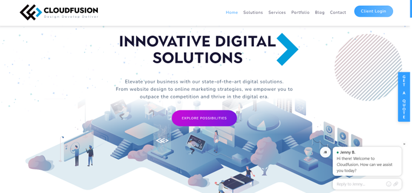
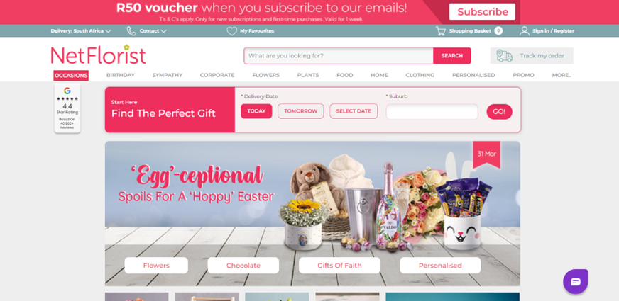
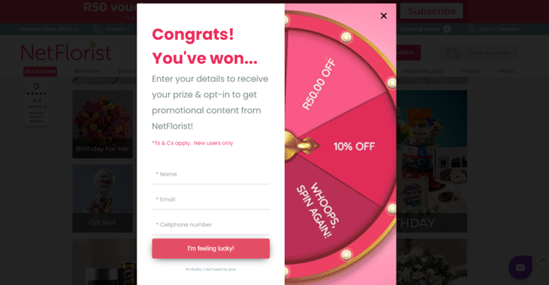
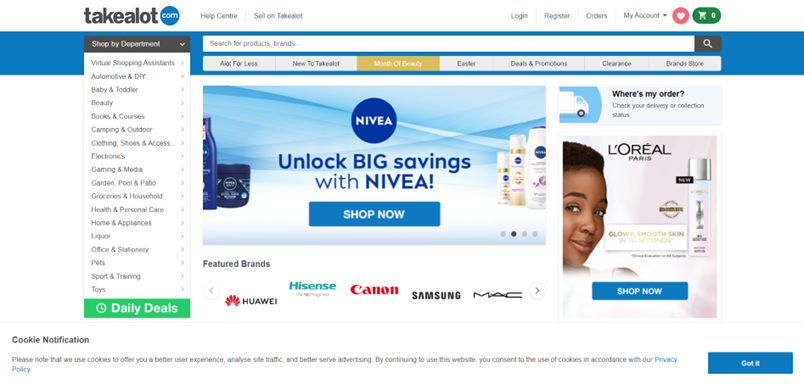
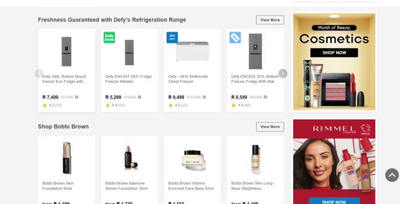

Ethics of UX practice
Week 6 (18/03 - 22/03)
This week we briefly spoke about the ethics of UX and UI. It was quite interesting to hear about some examples of unethical UI and UX. Hanli spoke about certain sites having pop up ads that always have a tiny ‘x’ in the corner of their ad which is difficult to tap or apps for children that will have giant subscribe/purchase buttons for them to tap. I never really thought about UI and UX being used unethically, I generally thought all of these things were just poor designs, but its quite clear there was intention behind all of them. Its so crazy to me that people do things like this to benefit themselves or their businesses, and once you analyse it you sort of see why its done, but gosh is it a strange way to get you or your company far.
With the essay topic of ethical UI and UX in mind for our next assignment, I looked into some South African websites I could analyse in regard to UI and UX.
Cloud Fusion [1]

This website is so pretty to scroll through and navigate around. The interface is easy to use, and everything is very clearly accessible and interactive for the user. The only thing I might have an issue with, is the tiny ‘x’ in the bottom right corner of the screen, linked to the chat bot, being quite small and not immediately easy to see at first glance.
NetFlorist [2]

I had a look at NetFlorist and the website is actually quite cool. I would say that it appears quite busy, however everything is in one place and everything on their home page is interactive. The site has categories for each gift-type they offer which goes into subcategories, thus showing good orgaisation and flow for the layout of the website.
While visiting the site, I also got a pop up from Netflorist - shown below, which was actually one of the very few pop ups I’ve seen that uses correct UI and UX. All the information of the pop up is present, along with heading of the pop up indicating its purpose, making it easy for the user to decide whether to engage or not. The ‘x’ is very visible, which makes it easier for users to get rid of the pop up.

Takealot [3]
 
I checked takealot out and oh my gosh, I didn’t realise how much there is going on here. Although a user can navigate around this site in a fairly okay way, I would say its not very appealing to look at. It sort of looks congested and almost dull, I would say this is as a result of the ads running along the side of the displayed products and the colour, font, image and price design choices. I guess the site gets its point across by providing the necessary information to the user, however I think this could have been executed better to make things look better and more appealing to the user.
References:
[1] - Cloud Fusion at: https://www.cloudfusion.co.za/ [Accessed: 20 March 2024]
[2] - NetFlorist at: https://www.netflorist.co.za/ [Accessed: 20 March 2024]
[3] - Takealot at: https://www.takealot.com/ [Accessed: 20 March 2024]